讲座 5
- 欢迎!
- 数据结构
- Queues
- Stacks
- Jack Learns the Facts
- Resizing Arrays
- Arrays
- 链表
- Trees
- Dictionaries
- Hashing and 哈希表
- Tries
- Summing Up
欢迎!
- All the prior 周次 have presented you with the fundamental building blocks of 编程.
- All you have learned in C will enable you to implement these building blocks in higher-level 编程 languages such as Python.
- Each 周, concepts have become 更多 and 更多 challenging, like a hill becoming 更多 and 更多 steep. This 周, the challenge evens off as we explore 数据结构.
- To 日期, you have learned 关于 how an array can organize data in 内存.
- Today, we are going to talk 关于 organizing data in 内存 and design possibilities that emerge from your growing knowledge.
数据结构
- 数据结构 essentially are forms of organization in 内存.
- There are many ways to organize data in 内存.
- Abstract data types are those that we can conceptually imagine. When learning 关于 计算机科学, it’s often useful to begin with these conceptual 数据结构. Learning these will make it easier later to understand how to implement 更多 concrete 数据结构.
Queues
- Queues are one form of abstract data structure.
- Queues have specific properties. Namely, they are FIFO or “first in first out.” You can imagine yourself in a line for a ride at an amusement park. The first person in the line gets to go on the ride first. The last person gets to go on the ride last.
- Queues have specific actions associated with them. For 示例, an item can be enqueued; that is, the item can join the line or queue. Further, an item can be dequeued or leave the queue once it reaches the front of the line.
-
In code, you can imagine a queue as follows:
const int CAPACITY = 50; typedef struct { person people[CAPACITY]; int size; } queue;Notice that an array called people is of type
person. TheCAPACITYis how high the stack could be. The integersizeis how full the queue actually is, regardless of how much it can hold.
Stacks
- Queues contrast a stack. Fundamentally, the properties of a stack are different than those of a queue. Specifically, it is LIFO or “last in first out.” Just like stacking trays in a dining hall, a tray that is placed in a stack last is the first that 五月 be picked up.
- Stacks have specific actions associated with them. For 示例, push places something on top of a stack. Pop is removing something from the top of the stack.
-
In code, you might imagine a stack as follows:
const int CAPACITY = 50; typedef struct { person people[CAPACITY]; int size; } stack;Notice that an array called people is of type
person. TheCAPACITYis how high the stack could be. The integersizeis how full the stack actually is, regardless of how much it could hold. Notice that this code is the same as the code from the queue. - You might imagine that the above code has a limitation. Since the capacity of the array is always predetermined in this code. Therefore, the stack 五月 always be oversized. You might imagine only using one place in the stack out of 5000.
- It would be nice for our stack to be dynamic – able to grow as items are added to it.
Jack Learns the Facts
- We watched a 视频 called Jack Learns the Facts by Professor Shannon Duvall of Elon University.
Resizing Arrays
- Rewinding to 第 2 周, we introduced you to your first data structure.
- An array is a block of contiguous 内存.
-
You might imagine an array as follows:

-
In 内存, there are other values being stored by other programs, functions, and variables. Many of these 五月 be unused garbage values that were utilized at one point but are available now for use.
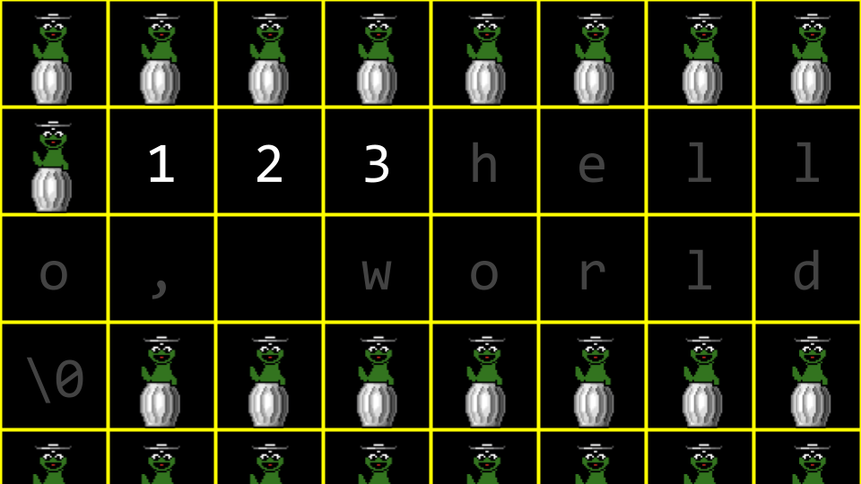
-
Imagine you wanted to store a fourth value
4in our array. What would be needed is to allocate a new area of 内存 and move the old array to a new one? Initially, this new area of 内存 would be populated with garbage values.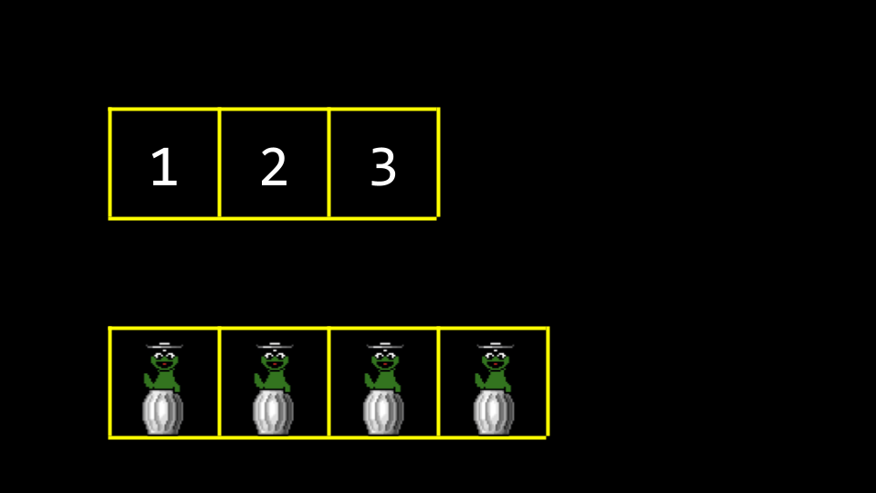
-
As values are added to this new area of 内存, old garbage values would be overwritten.

-
Eventually, all old garbage values would be overwritten with our new data.

- One of the drawbacks of this approach is that it’s bad design: Every 时间 we add a number, we have to copy the array item by item.
Arrays
- Wouldn’t it be nice if we were able to put the
4somewhere else in 内存? By definition, this would no longer be an array because4would no longer be in contiguous 内存. How could we connect different locations in 内存? -
In your terminal, type
code list.cand write code as follows:// Implements a list of numbers with an array of fixed size #include <stdio.h> int main(void) { // List of size 3 int list[3]; // Initialize list with numbers list[0] = 1; list[1] = 2; list[2] = 3; // Print list for (int i = 0; i < 3; i++) { printf("%i\n", list[i]); } }Notice that the above is very much like what we learned earlier in this 课程. 内存 is preallocated for three items.
-
Building upon our knowledge obtained 更多 recently, we can leverage our understanding of 指针 to create a better design in this code. Modify your code as follows:
// Implements a list of numbers with an array of dynamic size #include <stdio.h> #include <stdlib.h> int main(void) { // List of size 3 int *list = malloc(3 * sizeof(int)); if (list == NULL) { return 1; } // Initialize list of size 3 with numbers list[0] = 1; list[1] = 2; list[2] = 3; // List of size 4 int *tmp = malloc(4 * sizeof(int)); if (tmp == NULL) { free(list); return 1; } // Copy list of size 3 into list of size 4 for (int i = 0; i < 3; i++) { tmp[i] = list[i]; } // Add number to list of size 4 tmp[3] = 4; // Free list of size 3 free(list); // Remember list of size 4 list = tmp; // Print list for (int i = 0; i < 4; i++) { printf("%i\n", list[i]); } // Free list free(list); return 0; }Notice that a list of size three integers is created. Then, three 内存 addresses can be assigned the values
1,2, and3. Then, a list of size four is created. 下一页, the list is copied from the first to the second. The value for the4is added to thetmplist. Since the block of 内存 thatlistpoints to is no longer used, it is freed using the commandfree(list). Finally, the compiler is told to pointlistpointer now to the block of 内存 thattmppoints to. The 目录 oflistare printed and then freed. Further, notice the inclusion ofstdlib.h. - It’s useful to think 关于
listandtmpas both signs that point to a chunk of 内存. As in the 示例 above,listat one point pointed to an array of size 3. By the end,listwas told to point to a chunk of 内存 of size 4. Technically, by the end of the above code,tmpandlistboth pointed to the same block of 内存. -
One way by which we can copy the array without a for loop is by using
realloc:// Implements a list of numbers with an array of dynamic size using realloc #include <stdio.h> #include <stdlib.h> int main(void) { // List of size 3 int *list = malloc(3 * sizeof(int)); if (list == NULL) { return 1; } // Initialize list of size 3 with numbers list[0] = 1; list[1] = 2; list[2] = 3; // Resize list to be of size 4 int *tmp = realloc(list, 4 * sizeof(int)); if (tmp == NULL) { free(list); return 1; } list = tmp; // Add number to list list[3] = 4; // Print list for (int i = 0; i < 4; i++) { printf("%i\n", list[i]); } // Free list free(list); return 0; }Notice that the list is reallocated to a new array via
realloc. - One 五月 be tempted to allocate way 更多 内存 than 必需 for the list, such as 30 items instead of the 必需 3 or 4. However, this is bad design as it taxes system 资源 when they are not potentially needed. Further, there is little guarantee that 内存 for 更多 than 30 items will be needed eventually.
链表
- In recent 周次, you have learned 关于 three useful primitives. A
structis a data type that you can define yourself. A.in dot notation allows you to access variables inside that structure. The*operator is used to declare a pointer or dereference a variable. - Today, you are introduced to the
->operator. It is an arrow. This operator goes to an address and looks inside a structure. - A linked list is one of the most powerful 数据结构 within C. A linked list allows you to include values that are located in varying areas of 内存. Further, they allow you to dynamically grow and shrink the list as you desire.
-
You might imagine three values stored in three different areas of 内存 as follows:

- How could one stitch together these values in a list?
-
We could imagine the data pictured above as follows:

-
We could utilize 更多 内存 to keep track of where the 下一页 item using a pointer.
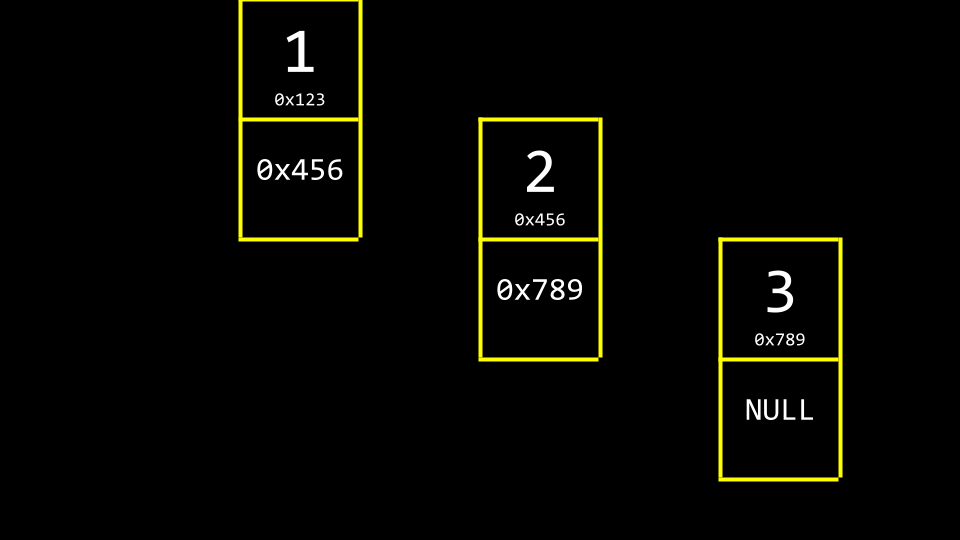
Notice that NULL is utilized to indicate that nothing else is 下一页 in the list.
-
By convention, we would keep one 更多 element in 内存, a pointer, that keeps track of the first item in the list, called the head of the list.
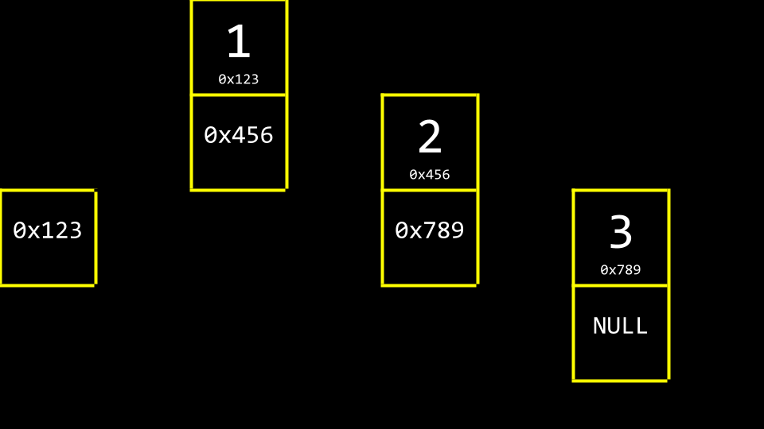
-
Abstracting away the 内存 addresses, the list would appear as follows:
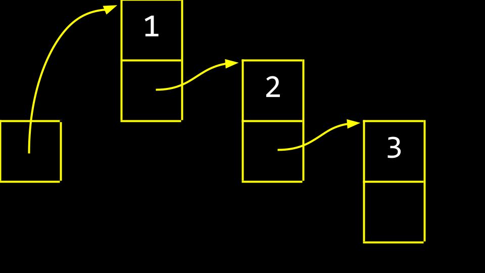
-
These boxes are called nodes. A node contains both an item and a pointer called 下一页. In code, you can imagine a node as follows:
typedef struct node { int number; struct node *next; } node;Notice that the item contained within this node is an integer called
number. Second, a pointer to a node callednextis included, which will point to another node somewhere in 内存. -
We can recreate
list.cto utilize a linked list:// Start to build a linked list by prepending nodes #include <cs50.h> #include <stdio.h> #include <stdlib.h> typedef struct node { int number; struct node *next; } node; int main(void) { // Memory for numbers node *list = NULL; // Build list for (int i = 0; i < 3; i++) { // Allocate node for number node *n = malloc(sizeof(node)); if (n == NULL) { return 1; } n->number = get_int("Number: "); n->next = NULL; // Prepend node to list n->next = list; list = n; } return 0; }First, a
nodeis defined as astruct. For each element of the list, 内存 for anodeis allocated viamallocto the size of a node.n->number(orn’s number field) is assigned an integer.n->next(orn’s 下一页 field) is assignednull. Then, the node is placed at the start of the list at 内存 地点list. -
Conceptually, we can imagine the process of creating a linked list. First,
node *listis declared, but it is of a garbage value.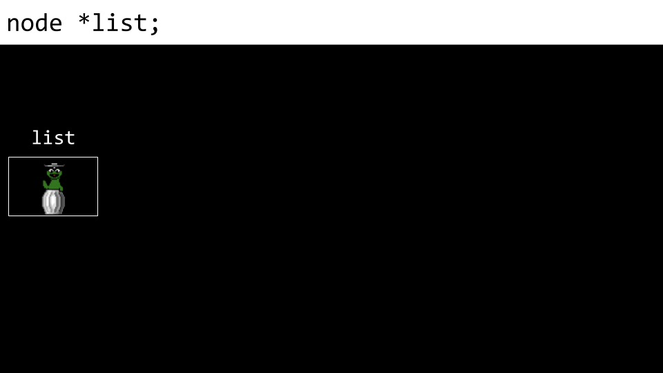
-
下一页, a node called
nis allocated in 内存.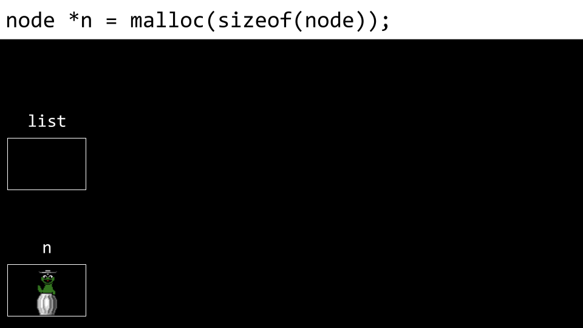
-
下一页, the
numberof node is assigned the value1.
-
下一页, the node’s
nextfield is assignedNULL.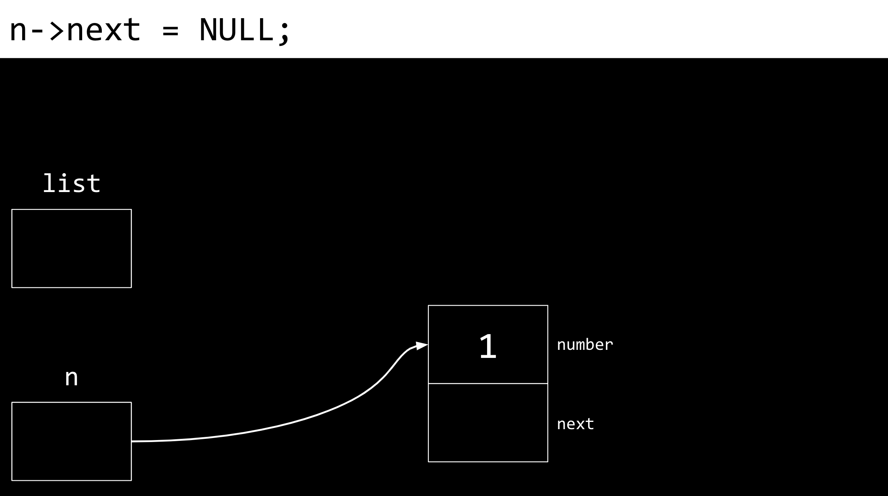
-
下一页,
listis pointed at the 内存 地点 to wherenpoints.nandlistnow point to the same place.
-
A new node is then created. Both the
numberandnextfield are filled with garbage values.
-
The
numbervalue ofn’s node (the new node) is updated to2.
-
Also, the
nextfield is updated as well.
-
Most importantly, we do not want to lose our connection to any of these nodes lest they be lost forever. Accordingly,
n’snextfield is pointed to the same 内存 地点 aslist.
-
Finally,
listis updated to point atn. We now have a linked list of two items.
- Looking at our diagram of the list, we can see that the last number added is the first number that appears in the list. Accordingly, if we print the list in order, starting with the first node, the list will appear out of order.
-
We can print the list in the correct order as follows:
// Print nodes in a linked list with a while loop #include <cs50.h> #include <stdio.h> #include <stdlib.h> typedef struct node { int number; struct node *next; } node; int main(void) { // Memory for numbers node *list = NULL; // Build list for (int i = 0; i < 3; i++) { // Allocate node for number node *n = malloc(sizeof(node)); if (n == NULL) { return 1; } n->number = get_int("Number: "); n->next = NULL; // Prepend node to list n->next = list; list = n; } // Print numbers node *ptr = list; while (ptr != NULL) { printf("%i\n", ptr->number); ptr = ptr->next; } return 0; }Notice that
node *ptr = listcreates a temporary variable that points at the same spot thatlistpoints to. Thewhileprints what at the nodeptrpoints to, and then updatesptrto point to thenextnode in the list. - In this 示例, inserting into the list is always in the order of \(O(1)\), as it only takes a very small number of steps to insert at the front of a list.
- Considering the amount of 时间 必需 to 搜索 this list, it is in the order of \(O(n)\), because in the worst case the entire list must always be searched to find an item. The 时间 complexity for adding a new element to the list will depend on where that element is added. This is illustrated in the 示例 below.
- 链表 are not stored in a contiguous block of 内存. They can grow as large as you wish, provided that enough system 资源 exist. The downside, however, is that 更多 内存 is 必需 to keep track of the list instead of an array. For each element you must store not just the value of the element, but also a pointer to the 下一页 node. Further, 链表 cannot be indexed into like is possible in an array because we need to pass through the first \(n - 1\) elements to find the 地点 of the \(n\)th element. Because of this, the list pictured above must be linearly searched. 二分搜索, therefore, is not possible in a list constructed as above.
-
Further, you could place numbers at the end of the list as illustrated in this code:
// Appends numbers to a linked list #include <cs50.h> #include <stdio.h> #include <stdlib.h> typedef struct node { int number; struct node *next; } node; int main(void) { // Memory for numbers node *list = NULL; // Build list for (int i = 0; i < 3; i++) { // Allocate node for number node *n = malloc(sizeof(node)); if (n == NULL) { return 1; } n->number = get_int("Number: "); n->next = NULL; // If list is empty if (list == NULL) { // This node is the whole list list = n; } // If list has numbers already else { // Iterate over nodes in list for (node *ptr = list; ptr != NULL; ptr = ptr->next) { // If at end of list if (ptr->next == NULL) { // Append node ptr->next = n; break; } } } } // Print numbers for (node *ptr = list; ptr != NULL; ptr = ptr->next) { printf("%i\n", ptr->number); } // Free memory node *ptr = list; while (ptr != NULL) { node *next = ptr->next; free(ptr); ptr = next; } return 0; }Notice how this code walks down this list to find the end. When appending an element (adding to the end of the list) our code will run in \(O(n)\), as we have to go through our entire list before we can add the final element. Further, notice that a temporary variable called
nextis used to trackptr->next. -
Further, you could 排序 your list as items are added:
// Implements a sorted linked list of numbers #include <cs50.h> #include <stdio.h> #include <stdlib.h> typedef struct node { int number; struct node *next; } node; int main(void) { // Memory for numbers node *list = NULL; // Build list for (int i = 0; i < 3; i++) { // Allocate node for number node *n = malloc(sizeof(node)); if (n == NULL) { return 1; } n->number = get_int("Number: "); n->next = NULL; // If list is empty if (list == NULL) { list = n; } // If number belongs at beginning of list else if (n->number < list->number) { n->next = list; list = n; } // If number belongs later in list else { // Iterate over nodes in list for (node *ptr = list; ptr != NULL; ptr = ptr->next) { // If at end of list if (ptr->next == NULL) { // Append node ptr->next = n; break; } // If in middle of list if (n->number < ptr->next->number) { n->next = ptr->next; ptr->next = n; break; } } } } // Print numbers for (node *ptr = list; ptr != NULL; ptr = ptr->next) { printf("%i\n", ptr->number); } // Free memory node *ptr = list; while (ptr != NULL) { node *next = ptr->next; free(ptr); ptr = next; } return 0; }Notice how this list is sorted as it is built. To insert an element in this specific order, our code will still run in \(O(n)\) for each insertion, as in the worst case we will have to look through all current elements.
- This code 五月 seem complicated. However, notice that with 指针 and the syntax above, we can stitch data together in different places in 内存.
Trees
- Arrays offer contiguous 内存 that can be searched quickly. Arrays also offered the opportunity to engage in 二分搜索.
- Could we combine the best of both arrays and 链表?
- 二分搜索 trees are another data structure that can be used to store data 更多 efficiently so that it can be searched and retrieved.
-
You can imagine a sorted sequence of numbers.

-
Imagine then that the center value becomes the top of a tree. Those that are 较少 than this value are placed to the left. Those values that are 更多 than this value are to the right.
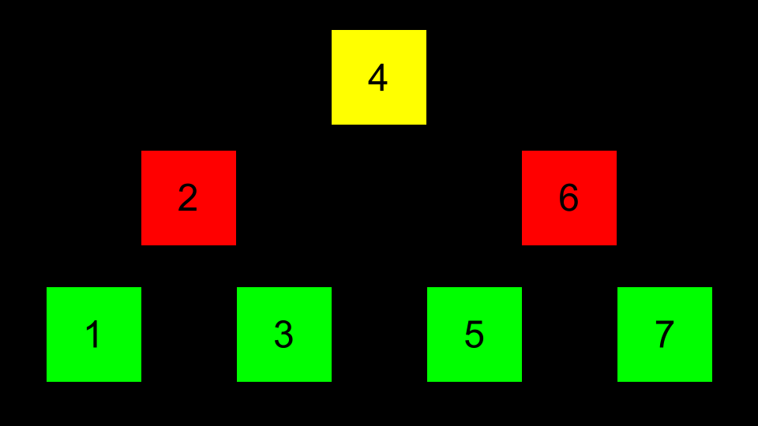
-
指针 can then be used to point to the correct 地点 of each area of 内存 such that each of these nodes can be connected.
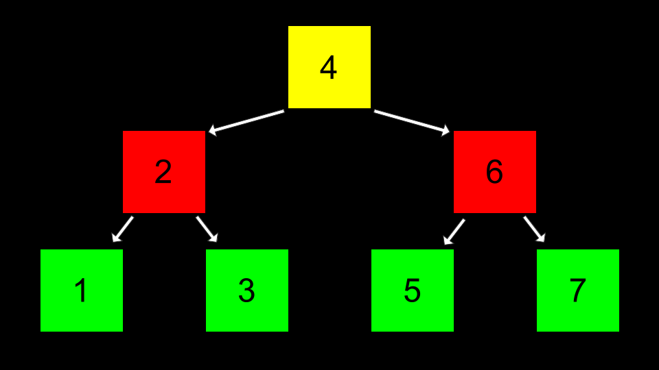
-
In code, this can be implemented as follows.
// Implements a list of numbers as a binary search tree #include <stdio.h> #include <stdlib.h> // Represents a node typedef struct node { int number; struct node *left; struct node *right; } node; void free_tree(node *root); void print_tree(node *root); int main(void) { // Tree of size 0 node *tree = NULL; // Add number to list node *n = malloc(sizeof(node)); if (n == NULL) { return 1; } n->number = 2; n->left = NULL; n->right = NULL; tree = n; // Add number to list n = malloc(sizeof(node)); if (n == NULL) { free_tree(tree); return 1; } n->number = 1; n->left = NULL; n->right = NULL; tree->left = n; // Add number to list n = malloc(sizeof(node)); if (n == NULL) { free_tree(tree); return 1; } n->number = 3; n->left = NULL; n->right = NULL; tree->right = n; // Print tree print_tree(tree); // Free tree free_tree(tree); return 0; } void free_tree(node *root) { if (root == NULL) { return; } free_tree(root->left); free_tree(root->right); free(root); } void print_tree(node *root) { if (root == NULL) { return; } print_tree(root->left); printf("%i\n", root->number); print_tree(root->right); }Notice this 搜索 function begins by going to the 地点 of
tree. Then, it uses 递归 to 搜索 fornumber. Thefree_treefunction recursively frees the tree.print_treerecursively prints the tree. - A tree like the above offers dynamism that an array does not offer. It can grow and shrink as we wish.
- Further, this structure offers a 搜索 时间 of \(O(log n)\) when the tree is balanced.
Dictionaries
- Dictionaries are another data structure.
- Dictionaries, like actual book-form dictionaries that have a word and a definition, have a key and a value.
-
The holy grail of algorithmic 时间 complexity is \(O(1)\) or constant 时间. That is, the ultimate is for access to be instantaneous.
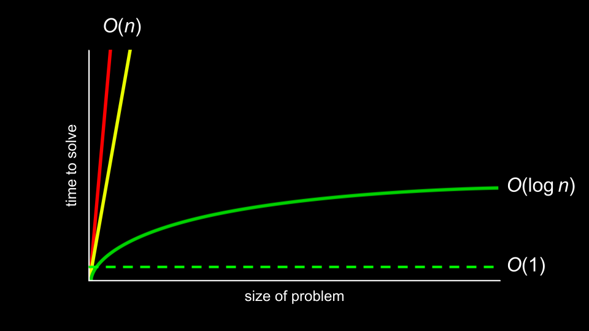
- Dictionaries can offer this speed of access through hashing.
Hashing and 哈希表
- Hashing is the idea of taking a value and being able to output a value that becomes a shortcut to it later.
- For 示例, hashing apple 五月 hash as a value of
1, and berry 五月 be hashed as2. Therefore, finding apple is as easy as asking the hash algorithm where apple is stored. While not ideal in terms of design, ultimately, putting all a’s in one bucket and b’s in another, this concept of bucketizing hashed values illustrates how you can use this concept: a hashed value can be used to shortcut finding such a value. - A hash function is an algorithm that reduces a larger value to something small and predictable. Generally, this function takes in an item you wish to add to your hash table, and returns an integer representing the array index in which the item should be placed.
- A hash table is a fantastic combination of both arrays and 链表. When implemented in code, a hash table is an array of 指针 to nodes.
-
A hash table could be imagined as follows:

Notice that this is an array that is assigned each value of the alphabet.
-
Then, at each 地点 of the array, a linked list is used to track each value being stored there:

- Collisions are when you add values to the hash table, and something already exists at the hashed 地点. In the above, collisions are simply appended to the end of the list.
-
Collisions can be reduced by better 编程 your hash table and hash algorithm. You can imagine an improvement upon the above as follows:

-
Consider the following 示例 of a hash algorithm:
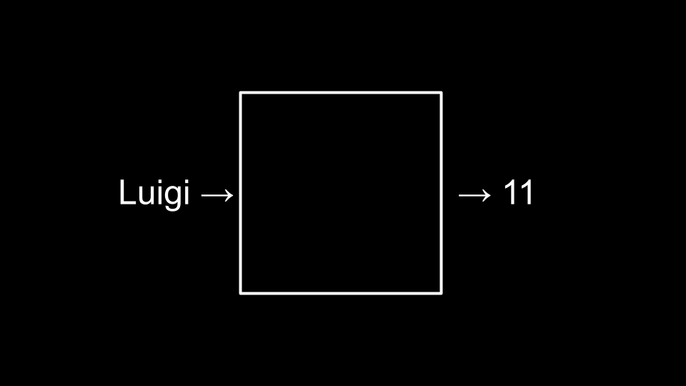
-
This could be implemented in code as follows:
#include <ctype.h> unsigned int hash(const char *word) { return toupper(word[0]) - 'A'; }Notice how the hash function returns the value of
toupper(word[0]) - 'A'. - You, as the programmer, have to make a decision 关于 the advantages of using 更多 内存 to have a large hash table and potentially reducing 搜索 时间 or using 较少 内存 and potentially increasing 搜索 时间.
- This structure offers a 搜索 时间 of \(O(n)\).
Tries
- Tries are another form of data structure. Tries are trees of arrays.
- Tries are always searchable in constant 时间.
- One downside to Tries is that they tend to take up a large amount of 内存. Notice that we need \(26 \times 4 = 104\)
nodes just to store Toad! -
Toad would be stored as follows:

-
Tom would then be stored as follows:

- This structure offers a 搜索 时间 of \(O(1)\).
- The downside of this structure is how many 资源 are 必需 to use it.
Summing Up
In this lesson, you learned 关于 using 指针 to build new 数据结构. Specifically, we delved into…
- 数据结构
- Stacks and queues
- Resizing arrays
- 链表
- Dictionaries
- Tries
See you 下一页 时间!